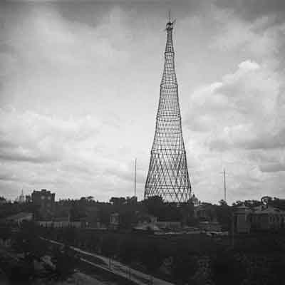
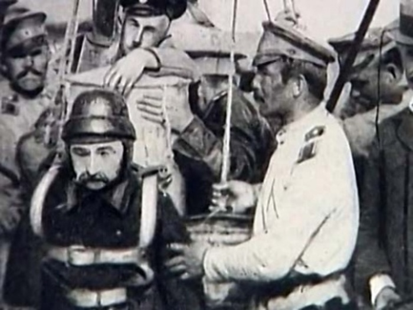
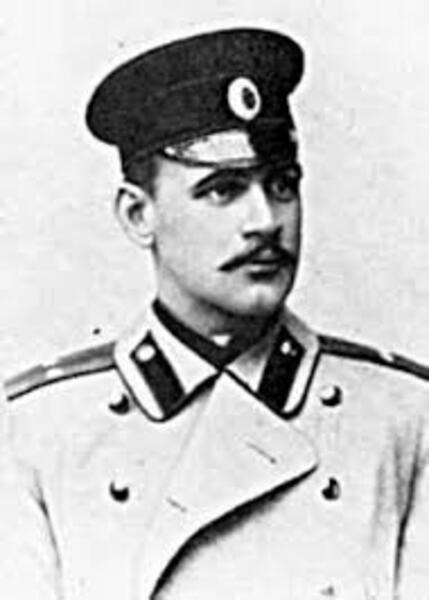

Кадры из залов
подлинные снимки со страниц музеяПо этим кадрам видно, как выглядела работа, о которой идёт речь: не реконструкция и не рисунок — съёмка своего времени.




Кабельное телевидение, гусеница, ранцевый парашют, наркоз на поле боя — всё это впервые появилось здесь, и мир до сих пор не переписал это на нас.
Музей устроен как календарь: у каждого дня свой экспонат, своя история и свой аудиогид.
Если ничего не появилось, войдите через календарь года.
Триста шестьдесят пять делений — это дни. Золотые уже открыты: за каждым стоит вещь, которую Россия дала миру раньше всех. Голубая стрелка показывает, где сейчас стоит год.
Ведите по кругу и нажимайте золотые деления: каждое откроет свой день музея. Голубая стрелка стоит на сегодняшней дате.
Смотреть список по месяцам →Календарь ведёт по дням, залы — по смыслу. Внутри зала перечислены записи, которые уже открыты.
По этим кадрам видно, как выглядела работа, о которой идёт речь: не реконструкция и не рисунок — съёмка своего времени.



Каждая карточка — отдельный день музея со своим разбором, игрой и голосовым гидом.